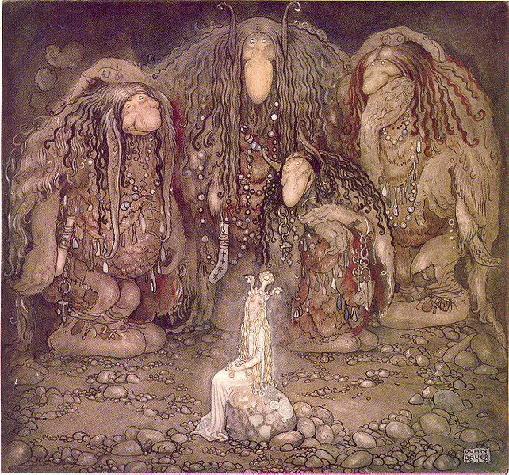

Феите
Феите са приказно красиви и добри свръхестествени същества от женски пол.
Те са духове откривани в
легендите, фолклора, и митологиите на много народи. Имат
човешки облик, но са с по-възвишен духовен мир и притежават свръхестествени
сили и способности. Обикновено са с крилца и издават меко сияние. Описват ги
като малки и красиви същества. Приписват им се качества, като ефимерност,
непостоянство, палавост и своенравност.
Тролите
Тролът е чудовище в скандинавските
народни поверия. Тролите са свръхестествени
същества подобни на великани и обикновено враждебно настроени към хората. Също
така се смята, че тролите били от камък, с очи от диаманти, похапващи хора, но
основното им меню било също камъни. Тролите са нощни същества, тъй като се
раждат от камъка и на слънчева светлина се превръщат отново в камък. Някои
троли са толкова големи, че са изобразявани като планини, а косата на главата
им е изобразявана като гора. Огромните и кръвожадни троли са противоположност
на малките гноми, които живеят под земята и пазят несметни богатства. За разлика
от тролите, които често ядат малки деца и дори възрастни, гномите могат да дарят
човек с богатство и щастие, но също така и да му създадат главоболия, особено ако
се е загубил в гъстите и мрачни гори на Скандинавия.